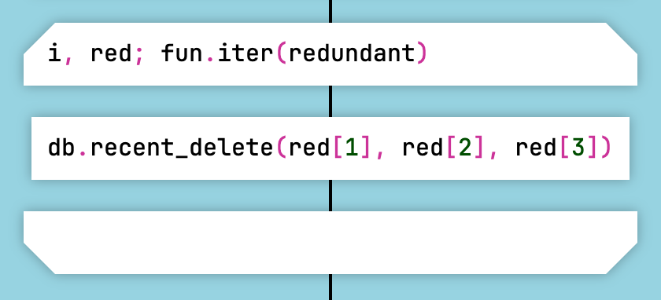
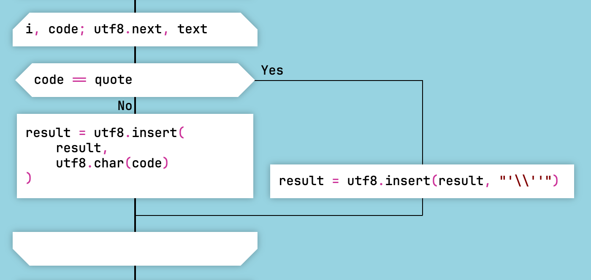

Generating Lua Code
DrakonTech creates a single Lua module for a project.
The module code returns an object with exported functions.
To place code at the beginning of the module, create a function with the special name module.
The Lua code generator supports classes and state machines.
The generated Lua code looks roughly like this:
local math = require("math") local os = require("os") setfenv(1, {}) function random() return math.randomseed(os.time()) end return { random = random }
Automatic Variable Declaration
In ordinary Lua functions, DrakonTech declares variables automatically. This means that the local keyword is forbidden inside a function body.
If you need to declare a local variable, simply assign a value to it. The code generator will declare the variable automatically.
You write:
x = 10
The code generator produces:
local x x = 10
There are two exceptions:
- In the module function, the local keyword is allowed but not required.
- In closures, variables must be declared explicitly with local.
In the following example, the items variable is declared automatically, while leftName and rightName must be declared manually because they are inside a closure:
items = {
{ name = "Charlie" },
{ name = "Alice" },
{ name = "Bob" }
}
table.sort(items, function(left, right)
local leftName = left.name or ""
local rightName = right.name or ""
return leftName < rightName
end)
Foreach Loop
The Foreach Loop icon is the DRAKON equivalent of for and foreach loops.
In DRAKON-Lua, there are three ways to specify a Foreach Loop:
- Iteration over an array. The construct
for _, item in ipairs(array) do ... endis written in the loop icon asitem; array. - Iteration over an object. The construct
for key, item in pairs(map) do ... endis written askey, item; map. - A for-style loop. The construct
i = 0; i < count; i = i + 1works the same way as in JavaScript.

Array Iteration in Lua

Object Iteration in Lua

For-Style Loop in Lua
An important feature is that for Lua, the generator does not add pairs() or ipairs() in certain cases:
- When the collection is a function call, for example:
x, y; fun.iter(some_object). - When the collection is an iterator expression, for example:
i, code; utf8.next, text.

Looping Over a Value Returned by a Function in Lua

Iterator Loop in Lua
Module Isolation
In DrakonTech Lua modules, the module must be isolated from the global environment. This is necessary because DrakonTech declares functions globally, that is, without using the local keyword. As a result, the global environment becomes polluted. Using local function is impossible because of Lua's limit on the maximum number of local variables.
To isolate a module in LuaJIT 5.1, use the following expression:
setfenv(1, {})
This expression should be placed inside the module function. Example:
local table = table local string = string local pairs = pairs local ipairs = ipairs local type = type local math = require("math") local os = require("os") setfenv(1, {})
For newer versions of Lua, a different trick is used to isolate the module:
local _ENV = { print = print, pairs = pairs, ipairs = ipairs, tostring = tostring, tonumber = tonumber, table = table, string = string, math = math, os = os }
For Tarantool and Redis, setfenv(1, {}) is usually appropriate. For Lua 5.2 and later, _ENV = {...} is used instead.